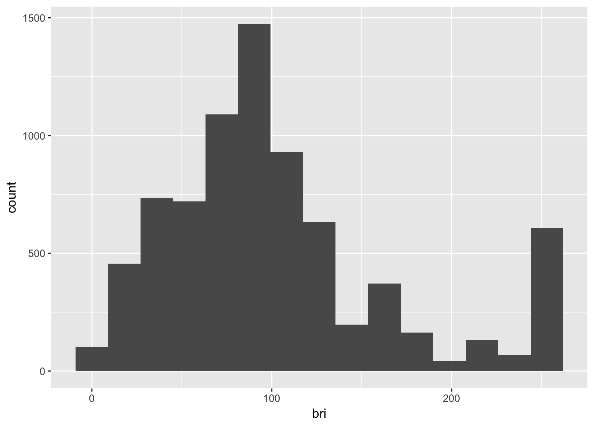

Tamas Szilagyi


My original inspiration for this post was Max Pagel’s article on using neural networks to automatically control his Philips Hue lights. In fact, I purchased my first set of Hue bulbs because of it. Perhaps I too can create my very own smart devices I thought.
Nowadays, it only takes a few lines of R code to create and expose prediction models as an API. In particular, I will rely on the caret package for modeling and on jug to create a prediction API.
Much like in my post on Spotify I have set up a cronjob to execute the Python script that pings the API and saves the data to Amazon S3 - you can find the functions on my Github. The starting point for this post will be the parsed .json file containing the log data for my “Dinner Lamps”. They are basically the main lights in my living room at the moment hanging above my dinner table.
library(aws.s3)
library(jsonlite)## Loading required package: methods# read file from amazon
aws.signature::use_credentials()
df <- s3read_using(object = paste0("hue_full_2017-08-26.json"),
fromJSON, bucket = "ams-hue-data")
str(df)## 'data.frame': 30322 obs. of 15 variables:
## $ on.1 : logi FALSE FALSE FALSE FALSE FALSE FALSE ...
## $ on.2 : logi FALSE FALSE FALSE FALSE FALSE FALSE ...
## $ bri.2 : int 131 131 131 131 131 131 131 131 131 131 ...
## $ type.1 : chr "Dimmable light" "Dimmable light" "Dimmable light" "Dimmable light" ...
## $ type.2 : chr "Dimmable light" "Dimmable light" "Dimmable light" "Dimmable light" ...
## $ bri.1 : int 131 131 131 131 131 131 131 131 131 131 ...
## $ modelid.2 : chr "LWB010" "LWB010" "LWB010" "LWB010" ...
## $ modelid.1 : chr "LWB010" "LWB010" "LWB010" "LWB010" ...
## $ name.1 : chr "Dinner Lamp 2" "Dinner Lamp 2" "Dinner Lamp 2" "Dinner Lamp 2" ...
## $ reachable.1: logi TRUE TRUE TRUE TRUE TRUE TRUE ...
## $ reachable.2: logi TRUE TRUE TRUE TRUE TRUE TRUE ...
## $ name.2 : chr "Dinner Lamp 1" "Dinner Lamp 1" "Dinner Lamp 1" "Dinner Lamp 1" ...
## $ alert.1 : chr "none" "none" "none" "none" ...
## $ log_time : chr "2017-05-12 17:00:02" "2017-05-12 17:05:01" "2017-05-12 17:10:02" "2017-05-12 17:15:01" ...
## $ alert.2 : chr "none" "none" "none" "none" ...The structure of the original .json file is such that for each lamp has a separate (numbered) column for every variable. The dataset is essentially a timeseries where each row represent a snapshot of the lamps’ state at log_time, or every 5 minutes. Before we move on to visualisations and modeling, let’s tidy things up a bit.
library(tidyr)
tidy_df <- df %>% gather(key, value, -log_time) %>%
separate(key, into = c("variable", "lamp"), sep = "\\.") %>%
spread(variable, value)
str(tidy_df)## 'data.frame': 60644 obs. of 9 variables:
## $ log_time : chr "2017-05-12 17:00:02" "2017-05-12 17:00:02" "2017-05-12 17:05:01" "2017-05-12 17:05:01" ...
## $ lamp : chr "1" "2" "1" "2" ...
## $ alert : chr "none" "none" "none" "none" ...
## $ bri : chr "131" "131" "131" "131" ...
## $ modelid : chr "LWB010" "LWB010" "LWB010" "LWB010" ...
## $ name : chr "Dinner Lamp 2" "Dinner Lamp 1" "Dinner Lamp 2" "Dinner Lamp 1" ...
## $ on : chr "FALSE" "FALSE" "FALSE" "FALSE" ...
## $ reachable: chr "TRUE" "TRUE" "TRUE" "TRUE" ...
## $ type : chr "Dimmable light" "Dimmable light" "Dimmable light" "Dimmable light" ...The 15 columns are now reduced to 9 because each variable appears only once thanks to adding a new key column lamp to the dataset. We will try to predict is $bri, or brightness of the lamps binned into four categories. Because when the lamp is not on nor reachable, brightness should be set at 0. Then we convert $log_time to type POSIXct and add the $y - the binned brightess variable.
library(dplyr)##
## Attaching package: 'dplyr'## The following objects are masked from 'package:stats':
##
## filter, lag## The following objects are masked from 'package:base':
##
## intersect, setdiff, setequal, unionbinned_df <- tidy_df %>% mutate(bri = replace(bri, on=="FALSE" | reachable=="FALSE",0) %>%
as.numeric(),
log_time = as.POSIXct(log_time, tz = "Europe/Amsterdam"),
y = as.factor(ifelse(bri == 0, "zero",
ifelse(between(bri,0,80), "dim",
ifelse(between(bri,80,160),"mid","bright")))))Let’s look at the distribution of our target variable.
table(binned_df$y) ##
## bright dim mid zero
## 1176 3106 3446 52916Almost 90% of the times the lamps are off, resulting in an unbalanced dataset. What abour brightess values lamps were on?
library(ggplot2)
binned_df %>% filter(bri != 0 ) %>%
ggplot(., aes(bri)) +
geom_histogram(bins = 15)
The distribution looks a seems to be close to normal with a positive skew, and a massive outlier all the way at the end of the spectrum. That’s maximum brightness, the default when I switch the lights on/off with a physical switch.
Before moving on to modeling, we end with lookin at the density distributions of brightness according to the categories we defined earlier:
binned_df %>% filter(bri != 0) %>%
ggplot(., aes(bri, fill = y, alpha = .5)) +
geom_density() +
guides(alpha = FALSE) +
ggtitle("Distribution of brightness categories")
Next, let’s make a simple model as quickly as possible. The aim here is not to create a perfect model, but one that’s good enough to put into production and easily iterated upon.
There were days, I wasn’t home. We’ll omit such days not to confuse the model more than my already irregular usage patterns.
off_days <- binned_df %>% group_by(date = as.Date(log_time,tz="Europe/Amsterdam")) %>%
dplyr::summarise(total_bri = sum(bri)) %>%
filter(total_bri == 0 ) %>%
select(date)The only features I will use, will be time based.
df_vars <- binned_df %>% filter(lamp == "1" & !as.Date(log_time) %in% off_days$date) %>%
select(log_time, y) %>%
mutate(date = as.Date(log_time,tz="Europe/Amsterdam"),
mins_passed = as.numeric(difftime(log_time,
as.POSIXct(paste0(date,"00:00:00"),
tz = "Europe/Amsterdam"),
units="mins") %>% round()),
day_of_week = factor(weekdays(date),
levels = c("Monday", "Tuesday", "Wednesday",
"Thursday", "Friday", "Saturday",
"Sunday")),
month = lubridate::month(date),
week = lubridate::week(date),
weekend = factor(ifelse(day_of_week %in% c("Friday","Saturday","Sunday"),
"weekend", "weekday")),
hour = lubridate::hour(log_time),
time_of_day = factor(ifelse(hour > 5 & hour < 12, "morning",
ifelse(hour > 11 & hour < 18, "afternoon",
ifelse(hour > 17 & hour < 24, "evening",
"night")))),
mins_cut = ifelse(time_of_day=="morning", mins_passed - 360,
ifelse(time_of_day=="afternoon", mins_passed - 720,
ifelse(time_of_day=="evening", mins_passed - 1080, mins_passed)))) %>%
select(-log_time, -mins_passed, -hour)draw brightness value randomly from the value distribution in each bucket!!